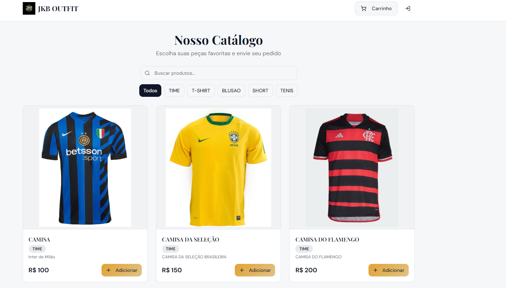
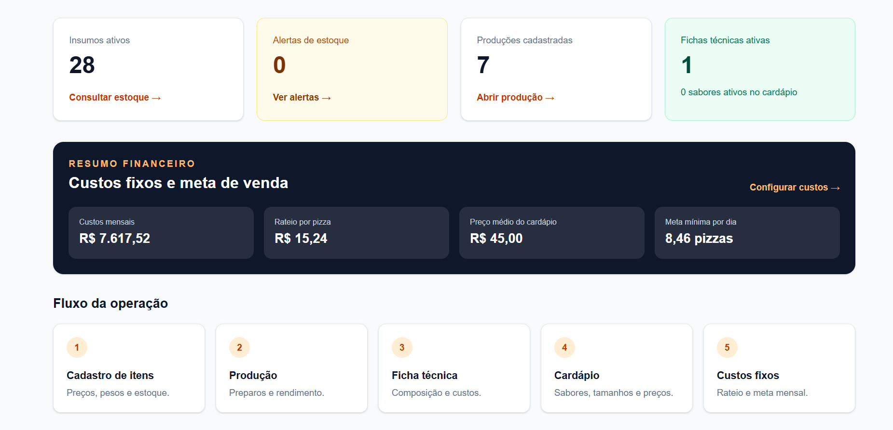

01Sistemas sob medidaDigitalize processos que hoje dependem de papel, planilhas ou controles improvisados.
02Automação de processosReduza tarefas repetitivas, erros de digitação e tempo gasto em atividades operacionais.
04Integração de informaçõesReúna dados de diferentes fontes para construir uma visão confiável da operação.
Concluído MineraçãoAutomação da gestão de documentosDocumentos, responsáveis e prazos reunidos em um único ambiente.Ver detalhes
 Concluído VarejoControle de estoque e vendasOperação centralizada para reduzir erros e agilizar o acesso aos dados.Ver detalhes
 Concluído Fast foodGestão inteligente da produçãoEstoque, produção, CMV e entregas acompanhados de forma integrada.Ver detalhes
1Entendemos sua rotinaConversamos com sua equipe e identificamos tarefas manuais, gargalos e oportunidades.
2Desenhamos a soluçãoDefinimos uma solução adequada à operação, às prioridades e ao momento da empresa.
3Implementamos e acompanhamosColocamos a solução em funcionamento, orientamos os usuários e acompanhamos sua evolução.